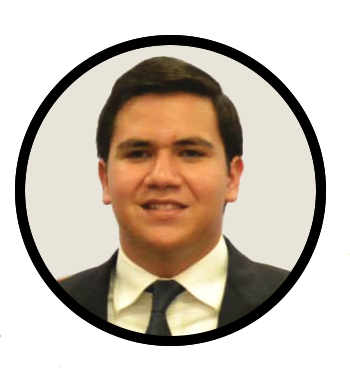

Personal Information
 |
Place of origin: Mexico Contact: |
Summary of my studies:
Current university: Tecnológico de Monterrey Campus Monterrey
Current courses:
- Natural Sciences and Sustainable Development
- Physics I
- Mathematics I
- Discrete Mathematics
- Introduction to Computer Science and Technology
- Introduction to Interactive Design
Courses progress
Awards:
- Best staff award APEC contest 2012
- Best staff award Filmmaker contest 2013
- Recipient of CIEN Diploma (Business Immersion)
- Recipient of Student Development Award
- Recipient of IB Diploma Courses (IB Grade): Computer Science SL (6), Mathematics SL (5) and Business and Management HL (6)
* 5 = Good
* 6 = Very good
- 3 Time Sub-Champion in high school soccer tournaments
Hobbies:
- Soccer
- Video games
- Programing
Personal life plan:
Next year I hope to have the opportunity to have my first professional experience in a company that allows me to learn and understand the functioning of a software development company. Also in the next few years I hope to gain entry to any exchange program which will allow me to study abroad somewhere where I can enrich my culture and studies.
Code of personal and professional ethics:
- Respect patents and copyrights
* I believe that respect patents and copyrights in the world of technology is something very important since we need to respect the work of another person and not consider them as your own
- Respect the confidentiality of information
* This point is quite important and I think I must be too careful with this because if a person trusts you information you must return the same respect
- Respect the laws relevant to the profession
* Respect the law is something we all do not always respect and makes us criminals and I do not consider being a felon in my future
- Make high-quality work
* Make quality work is the most important of all because the quality is everything and the most important aspect for any job
- To maintain the prestige of the profession
* To maintain the prestige of the profession is important to me because many consider this not to be a good profession and keep the prestige is something we should all do
- Be honest
* Be honest should be the basis of everything I do as being honest I can be the person I want to be in the future